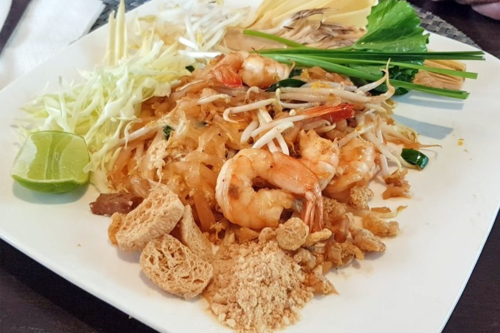
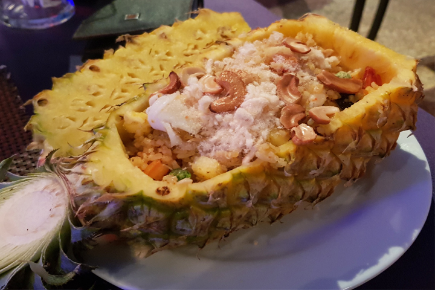
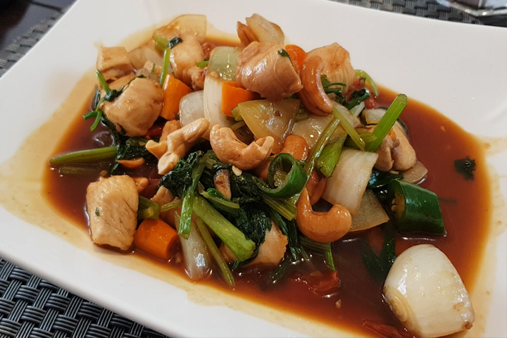

PLATILLOS TAILANDESES
Pad Thai

El plato más famoso del país. Se trata de fideos de arroz fritos con gama o pollo, según prefiráis, hechos con huevo, tofu, verduras y, el ingrediente secreto, una salsa con base de tamarindo y azúcar de palma. Dicen que el Pad Thai se inventó para diferenciar la cocina tailandesa de la china. Fuera como fuese, hoy en día es el plato favorito de los turistas. Los tailandeses también lo comen pero menos.
Som Tam

El Som Tam es una ensalada de papaya típica de la región de Isan, la zona más grande y poblada de Tailandia y la menos visitada. Además de la papaya, lleva chili, ajo, tomate y cacahuetes. Se aliña con una salsa de pescado (pla raa). Es un poco especial, no gusta a todo el mundo pero a quienes comemos, nos encanta. Os aconsejo darle más de una oportunidad para cogerle el punto. Se come con caoñiao, arroz pegajoso.
Khao Pad Saparod

Se trata de arroz frito con gambas o pollo, piña, huevo, anacardos, pasas y salsa de pescado. Se hace con curry en polvo así que también tiene un toque de sabor a curry. Excelente opción para niños.
Kai Pad Med Mamuang

Se trata de un plato de pollo, anacardos, pimienta, cebolla, champiñones y todo con una salsa hecha de salsa de ostras y soja. Raramente se come solo, se suele acompañar de un plato de arroz blanco o, mejor, arroz integral.